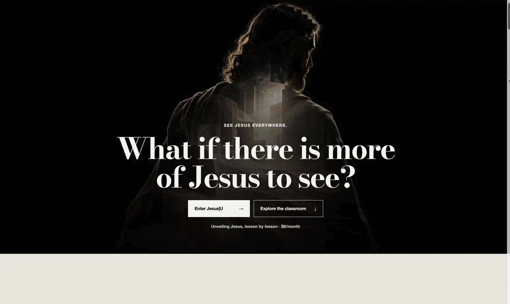
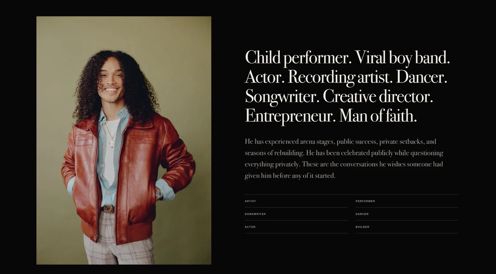
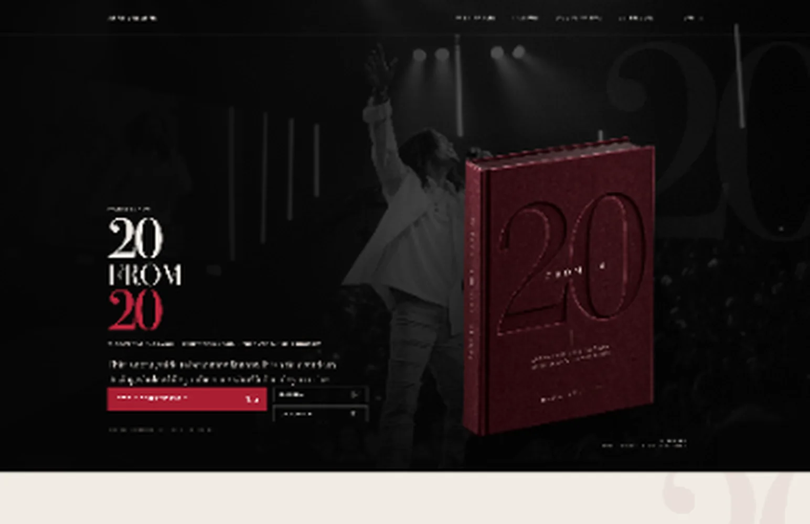

01 / UNDERSTAND
MAKE THE VALUE
IMMEDIATELY LEGIBLE.
Message and hierarchy should do the heavy lifting within seconds, not ask visitors to decode the offer.
I direct and build distinctive websites that make the value of a business easier to see, believe in, and act on.

AWAKEN TO JESUS Current site / 2026The point is not to give every client my aesthetic. It is to find the right one for their business.
A cinematic experience connecting a teaching platform, media, books and gatherings without losing the singular mission behind them — now presented with a live scrollthrough of the current site.
Platform strategy / Information architecture / Art direction / Design / Front-end implementation.
Visit Awaken to JesusAn editorial launch experience that brings Dana’s story forward and makes the journey from curiosity to purchase easy to follow — now shown with a live scrollthrough of the current site.
Strategy / Copy direction / Art direction / Design / Front-end / Commerce / Launch.
Visit Dana VaughnsA visitor needs to understand what is on offer, believe the quality, and know how to move forward.
Message and hierarchy should do the heavy lifting within seconds, not ask visitors to decode the offer.

Type, imagery and composition should make the business feel as considered as the work behind it.

A clear action belongs inside the story, not bolted on after the visual direction is finished.
The goal isn't to make every business look like Mark Krizsan. It's to make every business look more like itself, with greater clarity and conviction.
Strategy, copy, visual direction, code and launch are handled together, so the idea survives all the way to the finished site.
Current site, audience, offer, objectives and the gaps standing between the business and the buyer.
Positioning, content order, copy direction, design system and art direction.
Custom responsive design, front-end implementation, forms and the conversion path.
Performance, accessibility and SEO foundations, deployment, QA and handover.
Typical launch time begins once scope, content, assets and access are ready. Final scope, investment and timing are agreed before work begins.
I'm Mark. I bring positioning, design direction and development into one focused engagement. No layered handoffs, no borrowed template and no separation between the pitch and the person responsible for the outcome.
If your website no longer reflects the quality of your business, let's identify what needs to change and whether we're the right fit to build it.
Book a 15-minute fit call